| Name | Image | Tier | Pool | Description | Flavor |
|---|
| Basic Blade |  | Common | | Increase your attack damage by 1. | A simple utility blade, its helpful! |
| Cookie | 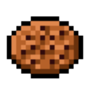 | Common | | Heal 1 HP the first two times you shuffle your draw pile each combat. | It tastes nice, and the dark chocolate flavour lingers. |
| Gardener's Gloves | 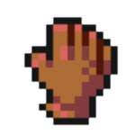 | Common | | Take 80% less damage from Thorns type damage. | Helps keep the brambles at bay. |
| Sand Arrows |  | Common | | When you deal unblocked attack damage, you have a 2% chance to Stun the enemy. This effect ignores artifact. | I like Sand Arrows. They are coarse and rough and irritating… and they hit everyone. |
| Spiral Slayer | 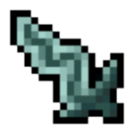 | Common | | Start every combat with 1Strength and TemporaryStrength. | So fancy it struggles to get to the middle of things. |
| Suffer the Sling | 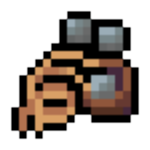 | Common | | All Strike cards deal 2 more damage, all bundle_of_peglin:Stonebundle_of_peglin:Orb deal 2 more damage ontop of that. Obtain a Stone+ on pickup. | Most people consider Stones to be useless orbs, but this sling can make them shine. |
| Unicorn Horn? |  | Common | | When an enemy dies, draw 1 card and put 1 card on top of your deck. | Perhaps. |
| Alchemist's Cookbook | | Uncommon | | Every 15 cards played, gain a bundle_of_peglin:Bomb+ that will detonate in 3 turns. | Inside the book you find many exotic ways to destroy your enemies. |
| Enhanced Gunpowder | 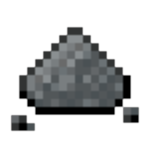 | Uncommon | | When you gain a bundle_of_peglin:Bomb, draw 2 cards. At the start of turn 4 gain a bundle_of_peglin:Bomb+. | Can be good for moving large rocks, or large enemies! |
| Improved Catalyst | 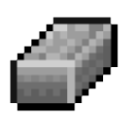 | Uncommon | | When you gain a Bomb, it deals 10 more damage. At the start of turn 5 gain a lit bundle_of_peglin:Bomb+. | This genious substance makes simple explosives form a more powerful clay. |
| Refreshield | | Uncommon | | At the start of your turn, shuffle your discard pile into your draw pile and draw 1 card. bundle_of_peglin:Synergy:FreshBandana - Draw 2 more cards per turn instead. | Keeps things fresh during the heat of battle so you wont forget what you are doing. |
| Super Boots | 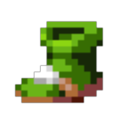 | Uncommon | | When you enter a "?" room, heal 2 HP. When you enter a RestSite, heal 5 HP. | Speedstrats not included. |
| Ambidextionary |  | Rare | | At the start of your turn draw 1 card and discard 1 card. Raise you maximum hand size by 1. | Well isnt that handy? |
| Apple a Day | | Rare | | Upon pickup, gain 15 Max HP. | May or may not keep the cleric at bay. |
| Bomb Baton |  | Rare | | At the start of combat, gain 3 Lit bundle_of_peglin:Bombs. They all deal 22 damage to all enemies and explode at the end of turns 4,6 and 8. | Be careful when picking it up not to drop them at your feet! |
| Decoy Orb | 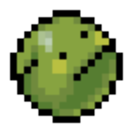 | Rare | | The first time you shuffle your deck each combat, ALWAYS bundle_of_peglin:Stun ALL enemies and end your turn. | If i am not taking a turn, then neither are you! |
| Eye Of The Turtle | | Rare | | Card rewards contain 2 more cards to choose from. Elite rooms card rewards contain 5 more cards to choose from. | Slow and decisive, you will have plenty of time to consider new techniques. |
| Grabby Hand | 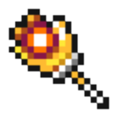 | Rare | | When you deal unblocked attack damage, deal 10% + 1 of this damage to ALL enemies. | Helps you reach high places and throw things straight. |
| Knife's Edge |  | Rare | | While your health is at or below 30%, deal 50% more damage, All Orb cards will Crit. | Small, sharp and exactly what you need in a pinch. |
| Pocket Sand | 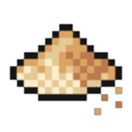 | Rare | | Enemies have a 5% chance to ALWAYS become bundle_of_peglin:stunned when attacking you. This effect can only happen once per turn. | Pocket sand! |
| Rallying Heart | 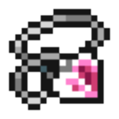 | Rare | | At the end of combat, heal 1 hp and 1 more for each bundle_of_peglin:Orb in your deck. | The Orbs call out for their friends. Unite them. |
| Refillibuster | 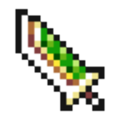 | Rare | | When you shuffle your draw pile, a random enemy loses hp equal to the number of cards in your deck. | Give it a swing! |
| Strange Brew |  | Rare | | When an enemy dies or your shuffle your deck, gain 3 temporary Strength and Dexterity. | Smells like a tar milkshake |
| Tactical Treat | 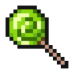 | Rare | | When you shuffle your deck, draw 2 cards and discard 2 cards. | Truly a tasty treat for anyone except your enemies! |
| Well Done Steak | 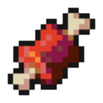 | Rare | | The first 2 times you shuffle your deck each combat, heal 6 HP. | I dunno man, looks kinda raw to me. |
| Infernal Ingot |  | Special | | When you deal unblocked attack damage, heal1 HP. | This confusing object absorbs the souls of creatures it touches, but you can take this essence back out of it later. |
| Shiny Special Button |  | Special | | Every 10th bundle_of_peglin:Orb you play gives 1bundle_of_peglin:Critical_Power. | A button from a faraway land, it seems to have fused with some of the gold in the spire... It craves orbs to share its power with. |
| Toxic Cake |  | Special | | Upon pickup, gain 5 Max HP and Upgrade all Skills in your deck. All future Skills will be Upgraded. | Surprisingly not a lie. Packed with acidic flavours, it helps keep your skills sharp. |
| Weighted Chip |  | Special | | When you play an Attack that deals damage, you have 3 outcomes: 40% - Deal 2x damage. 40% - Deal normal damage. 20% - Heal enemies for half of damage dealt. | This chip is rigged, most of the weight is stored in one side, but should it land on the soft side it lets out a cursed aura. |
| Bad Cheese |  | Boss | | Upon pickup gain 3 Max HP. When you draw a card, deal 1 damage to ALL enemies. This value increases by 1 this combat when you shuffle your deck. | The best kind of Cheese. |
| Complex Claw |  | Boss | | At the start of your turn gain [E], but you can no longer gain bundle_of_peglin:Critical_Power. If you have no bundle_of_peglin:Orb#ys in your deck that can bundle_of_peglin:Crit, instead lose 1Strength each turn. | This artisanal bladed weapon can help you to extract more from your existing techniques. |
| Consuming Chalice |  | Boss | | Your attacks deal 4 more damage, but you draw 1 less card next turn each time you shuffle your draw pile. | Drink from the chalice!? |
| Cursed Mask | 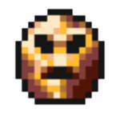 | Boss | | Start each combat Confused, your Attacks deal 5 more damage while you are Confused. | Its hard to see out of, but you think it makes you stronger? |
| Dumb Bell |  | Boss | | Whenever you shuffle your deck, gain 2Strength. | Dumbell would like you to think its the better bell because its shiny. |
| Echo Chamber |  | Boss | | All of your Attacks deal 2 more damage. When you deal Attack damage, store 10% of that amount, which can round up (currently 0) and increase the damage of your next Attack by this amount. | Its kinda echoey in here. |
| Electropegnet |  | Boss | | At the end of your turn, for each card left: Attack - Gain 3Vigor.Skill - Gain 2Block next turn. Power - Gain [E] and draw 1 card. If there were 5 or more cards, gain 1 draw for the rest of combat. | The magnet is a bit too strong, and it often gets stuck to other relics. |
| Fresh Bandana |  | Boss | | At the start of your turn, shuffle your discard pile into your draw pile then draw 3 cards. bundle_of_peglin:Synergy:Refreshield - Draw 2 more cards per turn. | Dont ask how the Bandana ended up in the punch bowl... |
| Gift That Keeps On Giving | | Boss | | At the start of your turn, lose [E] and all cards become bundle_of_peglin:Durable. | It never stops, which is both a good thing and a bad thing. |
| Glorious SuffeRING |  | Boss | | At the start of combat, ALWAYS lose 5Strength and Dexterity. Gain 1Strength when you play an Attack or 1Dexterity when playing a Skill.Power cards give 1 of each. | A little bad can do alot of good. |
| Haglin's Satchel | 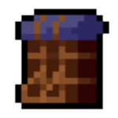 | Boss | | Upon pickup, upgrade 4 random cards. Obtain 1 card and 1 colourless card. | Probably stolen, but it contains a wealth of shiny items, so you are totally keeping it. |
| Kinetic Meteorite | 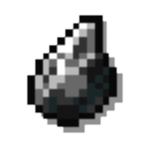 | Boss | | At the start of your turn draw 1 card. Whenever you play 3 cards, draw a card. The number of cards you need to play increases by 1 this turn when you shuffle your deck. | It still carries the energy it had when it crashed into the spire. |
| Matryoshka Shell |  | Boss | | Your Attacks deal 5 less damage. All Attacks are played one additional time. | Inside the doll, you find another, but each layer is smaller than the last. |
| Molten Mantle | 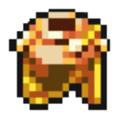 | Boss | | bundle_of_peglin:Rare. At the end of combat, lose all gold. Gain a smallbundle_of_peglin:buff at the start of combat for every 55 gold lost to this relic. | Its like the opposite of midas touch, gold turns to ashes that can burn your foes. |
| Round Guard | 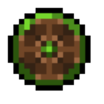 | Boss | | When you shuffle your deck, ALWAYS bundle_of_peglin:Stun ALL enemies. This effect then gains a cooldown of 1 turn, increasing by 1 each time it activates. | An old buckler that smells of mouldy cheese. |
| Salt Shaker |  | Boss | | When you draw a Slimed,Exhaust it and draw 2 cards. At the start of combat and upon playing a Power card, add a Slimed to your discard pile and draw pile. | Meal not included. |
| Sapper Sack | 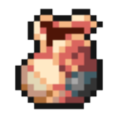 | Boss | | Multiply all bundle_of_peglin:Bomb#ys by 2.25x. At the start of turn 5 and every turn afterwards, lose 3 HP. Upon pickup obtain TheBomb. | Rigged! Its all rigged! |
| Sealed Conviction | 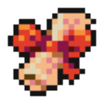 | Boss | | Your Attacks deal 4 more damage, but you discard your hand when you shuffle for the first time each combat. | It seals away evil, but now its stuck to you! |
| Short Fuse | | Boss | | When you gain a bundle_of_peglin:bomb, instantly detonate it. At the start of your turn, gain a 12 damage bundle_of_peglin:bomb. | Im gonna blow! |
| Wand of Skultimate Power | | Boss | | Lose 4 hp for every 20 cards played. Your Attack damage and bundle_of_peglin:Bomb damage dealt is Doubled. | UNLIMITED POWER!!! (To make tpyos). |
| Unpretentious Pendant |  | Shop | | Your Attacks deal 2 more damage, but you can no longer bundle_of_peglin:Crit, if you have no bundle_of_peglin:Orb cards that can crit, this bonus is halved. | Theres no need to show off, after all. |
{kind=link}